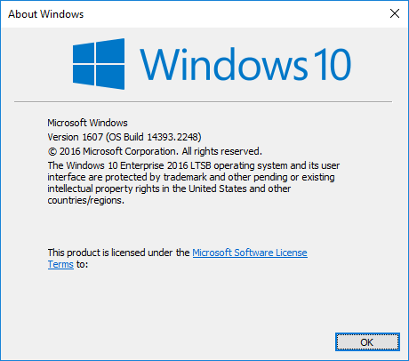
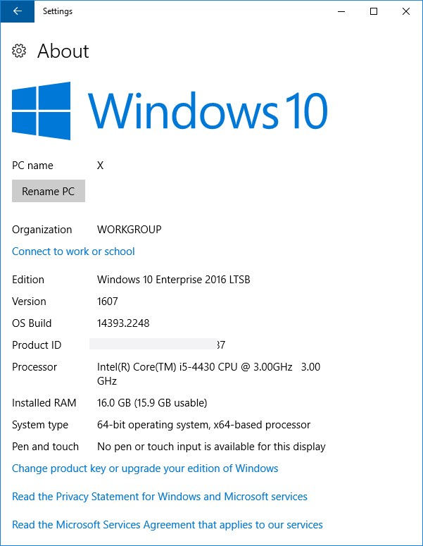

При скачивании некоторых обновлений, а также при выполнении определённых действий необходимо узнать свою версию Windows. Как это сделать? В этой небольшой статье мы рассмотрим 2 самых простых способа это сделать.
Все версии Windows имеют не только название (Windows 95, Windows 7, Windows 10), но и номер версии. Например сейчас (Май / 17 / 2018) актуальные версии Windows 10 – это 1803 и LTSB 1607. В свойствах системы можно узнать лишь некоторую информацию о системе, но версия там не написана. Чтобы посмотреть свою версию Windows открываем окно «выполнить» (Win+R) и набираем winver
После нажатия Ok появится вот такое окошко:

Отсюда понятно, что это версия 1607 LTSB.
Первый способ был с применением командной строки и главное его преимущество заключается в универсальности, т.е. команда winver будет работать на всех версиях Windows.
Второй способ узнать версию своей ОС Windows — зайти в Параметры / Settings, затем выбрать Система / System и зайти в раздел О программе / About.
Вид окна может немного различаться в разных сборках, но версия всегда видна.

Недостатком этого способа является то, что работает он лишь в Windows 10.